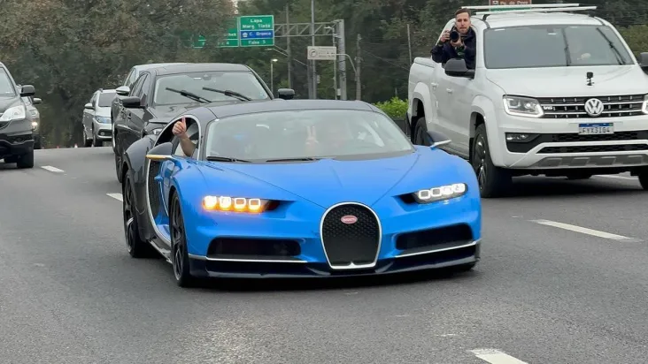

O novo "hypercar" do empresário Brasileiro, Jr, acaba de transportar o no "hypercar" para o Brasil, sendo único em faixa de preços e de quantidade.
|  |
Para quem é entusiasta de carros exóticos, 30 de junho de 2024 ficará na história. É a data da chegada do primeiro Bugatti Chiron do Brasil. O superesportivo é um carro exclusivo de nível mundial e pela primeira vez desde que foi lançado, em 2016, terá um dono nesta região. Aliás, será o carro mais caro do Brasil, com valor estimado em R$ 50 milhões.
O Bugatti Chiron foi apresentado em 2016 para ser o sucessor do Veyron, mas até hoje não havia nenhuma unidade circulando por aqui. No entanto, uma das últimas versões produzidas, com motor W16 de 1500 cv e que alcança 420 km/h, desembarcou nos últimos dias em São Paulo.
Um Bugatti Chiron Sport, agora, é brasileiro, e propriedade do maior colecionador de carros do país. Conhecido apenas como Junior pelos fãs do mundo automobilístico, ele mantém sua identidade em segredo, aparecendo em imagens usando um capacete.